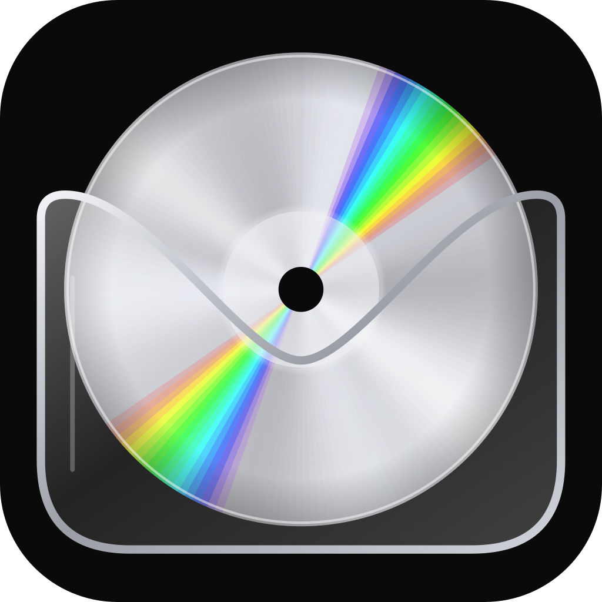

CD Wallet
Your music collection, in your own cloud.
CD Wallet is a self-hosted music archive. You deploy it into your own AWS account, upload the MP3 and M4A files you own from the command line, and stream them on your Android phone. Nobody else hosts your files, and you pay only for the storage you use.
Status: early development, not ready to install. Follow along on GitHub.
How it works
- Your AWS account holds a private S3 bucket for your music files and cover art, a DynamoDB table for the library index, and a small API (API Gateway and Lambda). It is all deployed with AWS CDK.
- The
cdwalletcommand-line tool deploys the stack, imports your music and pairs your phone. - The Android app syncs your library index, lets you browse and search instantly, and streams straight from your bucket.
Audio never passes through the API. The tool and the phone talk to S3 directly with short-lived signed URLs.
Quick start (once released)
git clone https://github.com/mikemcdevitt/cd-wallet.git
cd cd-wallet
pnpm install
pnpm cdwallet deploy # creates the stack in your AWS account
pnpm cdwallet import ~/Music # uploads your MP3s and M4As (safe to re-run)
pnpm cdwallet pair # prints a QR code; scan it in the appYou need an AWS account, Node.js 22, pnpm and local AWS credentials. To remove everything later, pnpm cdwallet destroy removes the stack and keeps your music; add --delete-data to delete that too (use --dry-run first to preview).
What it costs
You pay AWS directly. Music is stored with S3 Intelligent-Tiering, which moves tracks you have not played in a while to cheaper storage, with no retrieval fees. For 100 GB (about 12,500 tracks) in us-east-1 that you leave alone after uploading:
| Period | Average cost per month |
|---|---|
| First year | about $0.75 |
| From year two | about $0.45 |
| Five-year average | about $0.50 |
Plain S3 Standard is $2.30 a month for the same 100 GB, which is also the worst case if you play everything often. Prices change, so check current AWS pricing for your region.
Your responsibilities
- Your music. Use it only for music you have the right to store and play. Copyright rules vary by country.
- Your AWS bill. You pay AWS directly. The deploy can set up a monthly budget alert, but an alert is not a spending cap.
- Your keys. Keep the admin token on your computer private. You can revoke any phone with
pnpm cdwallet devices revoke.
Privacy and security
The project collects nothing: no accounts, analytics or telemetry. The phone and the tool talk only to your own deployment. Read PRIVACY.md, and to report a vulnerability see SECURITY.md.
Scope
Version 1 supports MP3 and M4A (AAC) files, which are stored exactly as you have them and never converted. Copy-protected iTunes files (.m4p) and Apple Lossless are skipped. It is Android only, with a basic player and one owner per deployment. CD Wallet is not a hosted service and does not support sharing, public links or downloading music you do not already have.